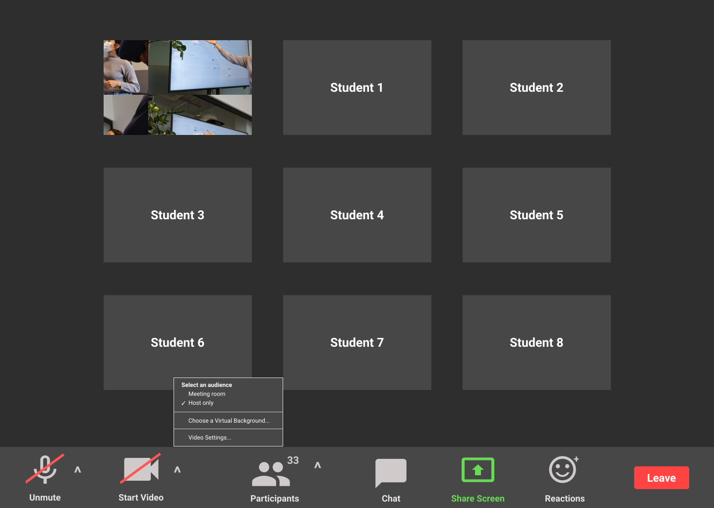
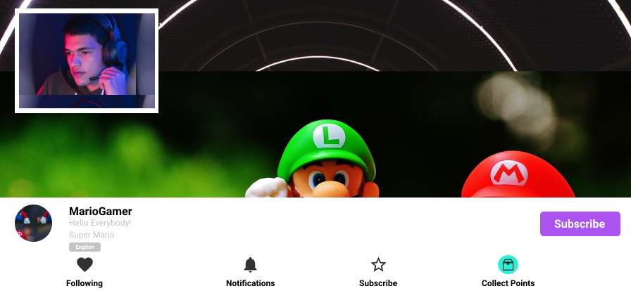

PRODUCT IDEAS
As someone who loves problem solving, I find myself constantly thinking about how the products I use could be improved. Below are a few feature ideas that I think would improve users’ experiences in applications I use!
Zoom - Share Video with Host
Schools all around the world, from kindegarten to post-secondary institutions have turned to Zoom to host virtual classes.
Teachers as Users
Many teachers have voiced how difficult it is teaching to a blank screen, encouraging students to turn on their webcam. This helps simulate an in-person classroom where they would be able to see their students.
Students as Users
While students emphasize with how teachers are feeling, for various reasons, many are uncomfortable sharing their video with the class. Unlike a classroom environment, when you turn on your webcam, you are directly in the view of your peers at all times.
Feature Idea
I believe that adding an option to only share your video with the host of the meeting would enhance the user experience by reducing students’ hesitation about turning on their webcam. Consequently, this will help teachers to feel more engaged with their class and fulfill their desire to be able to see the students they are speaking to.
Twitch Mobile App - Channel Points
When using the Twitch mobile app, I noticed that with mobile displays, when the chat panel is open, the size of the stream is reduced to 50% of the already small screen. I predict that for this reason, many users have the chat panel closed to be able to see the stream. However, this means that if they want to collect bonus channel points, they will need to remember to perioidcally open the bottom panel (seen above) and then open the chat panel.
Feature Idea
I believe that adding the channel points button to the bottom bar (as shown above), would be a feature that improves the experience for Twitch mobile users.